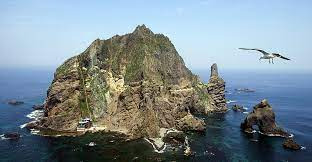

돌아가기
Dokdo
독도는 우리땅!

- 독도는 경상북도 울릉군 울릉읍 독도리 1~96번지로 울릉도에서 남동쪽 87.4km 거리에 있으며 맑은 날에는 울릉도에서 독도를 볼 수 있습니다.
- 약 460만년 전부터 250만년 전사이에 화산 분출로 형성되었으며 면적은 187ㅡ554m2, 동·서도 2개의 주섬과 89개의 돌섬 및 암초로 구성되어 있습니다.
- 환경부는 독도를 한국의 특정도서 제1호로 지정하였으며, 문화재청은 천연보호구역으로 지정하였고 또한 독도의 바다제비, 슴새, 괭이 갈매기의 번식지를 천연기념물 제336호로 지정하여
관리·보호하고 있습니다.
- 특히 독도는 2012년 12월 울릉도와 함께 국가지질공원으로 지정된 바 있으며 50~60여 종의 식물을 비롯해 다양한 곤충, 조류 해양 생물의 서식지 역할을 하고 있습니다.